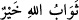
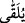
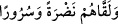
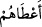
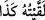

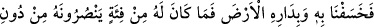
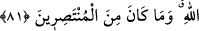
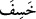
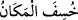
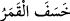
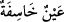
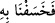

Celâleyn’de der ki: Bu kerâmete ancak dünyânın ziynetlerinden ve şehvetlerinden
uzaklaşarak itâat ve kulluğa sabredenler nâil olabilirler. Buradaki “kerâmet” ile
kasdedilen; ilim ehlinin söylediği “__WORD__ (Allah’ın sevabı daha hayırlıdır)”
sözündeki sevaptır, cennettir. Yâni onlar “karşılama (telkıye)” ve “telkin” istemezler.
Âlimlerin söylediği bu kelimeyi, onlar gönül ve dillerinde anmayacaklar.
“__WORD__ (verilir ya da kavuşabilir)” kelimesi; “__WORD__ (Allah onların yüzlerine
parlaklık ve sürûr verir)” âyetinde olduğu gibi “__WORD__ (vermek)” mânâsındadır. Bir
kimseyi bir şeyle karşıladığın, ona o şeyi verdiğin zaman şöyle dersin: “
Ona şunu
verdim, onu şununla karşıladım.”
Sabır ehli, cümle âlemden üstündür
Sabredenler, feleğin burcunu geçmiştir
Dünyaya sabır tohumu eken kimseler
Maîşet mahsulünü biçer sabredenler
81. Nihâyet biz, onu da, sarayını da yerin dibine geçirdik. Artık Allah’a karşı
kendisine yardım edecek avanesi olmadığı gibi, o, kendini savunup kurtarabilecek
kimselerden de değildi.
“Nihâyet biz, onu da, sarayını da yerin dibine geçirdik.”
“__WORD__ fiili birkaç şekilde kullanılır: Mekân yerin içine girdiğinde “__WORD__ (Yer
çöktü)”; Ayın ışığı zâil olduğu zaman “__WORD__ (Ay tutuldu)”; Gözün görme keskinliği
gittiği zaman da “__WORD__ (Çökmüş, görme özelliğini yitirmiş göz)” denir. “__WORD__ (Onu
yerin dibine geçirdik)” ifâdesindeki “ (bâ)” harf-i cerri; ta’diye içindir.
İbn Abbas (r.a.) der ki: Mûsâ (a.s.)’a zekât emri nâzil olunca; Kârûn ile her bin
dinarda bir dinar, her bin dirhemde bir dirhem ve her bin koyunda bir koyun vermek
üzere anlaştı. Bu, ilâhî emir gereğiydi. Vâcib olan, malının dörtte birini değil onda
birini vermekti. Kârûn malını hesapladı; zekâtının büyük bir meblağa ulaştığını gördü.
Cimriliği ve hırsı bu zekâtı vermeğe mânî oldu. İsrâiloğullarından bir grub toplayarak
onlara dedi ki: “Siz Mûsâ’ya, size her emrettiğini yapmakta itâat ettiniz. O şimdi
mallarınızı almak istiyor.” Onlar da dediler ki: “Sen büyüğümüzsün; dilediğini bize
emret.” Bunun üzerine Kârûn onlara şöyle dedi: Onu İsrailoğulları önünde rezil etmek
istiyorum ki bir daha kimse onun sözünü dinlemesin. Benim emrim, falan zâniye kadını